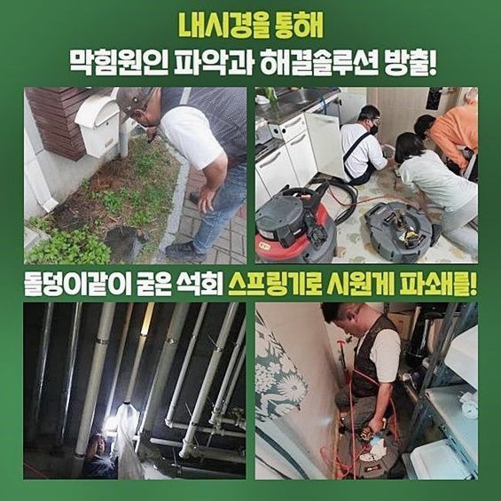
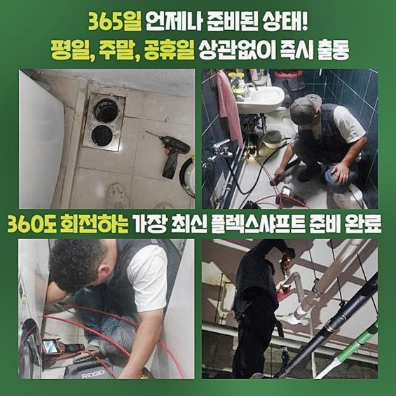
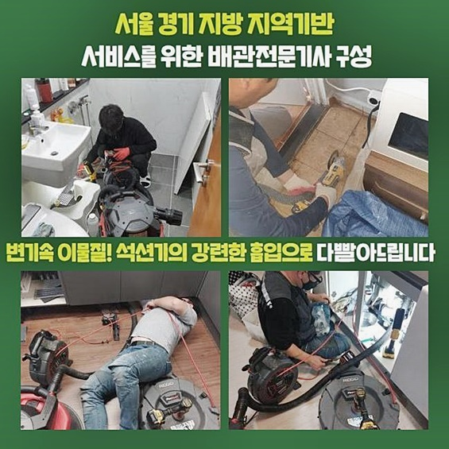
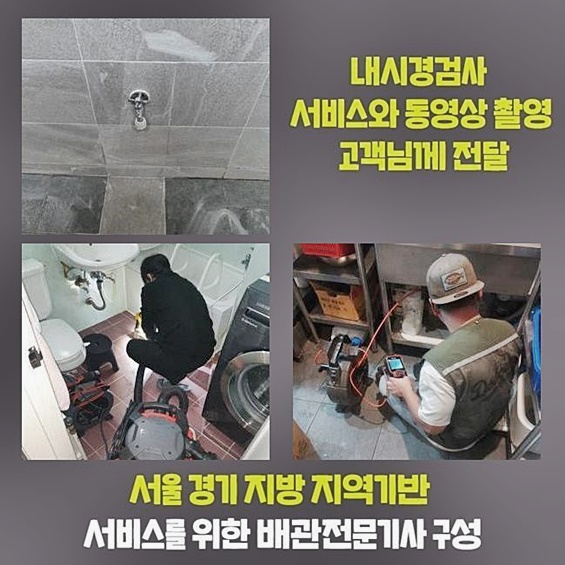
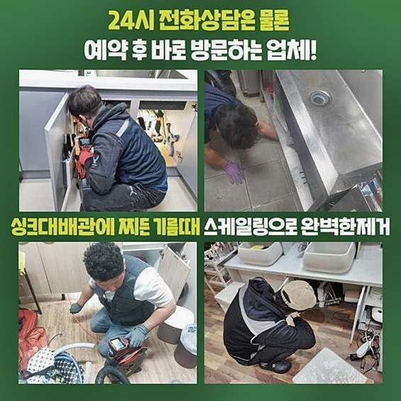
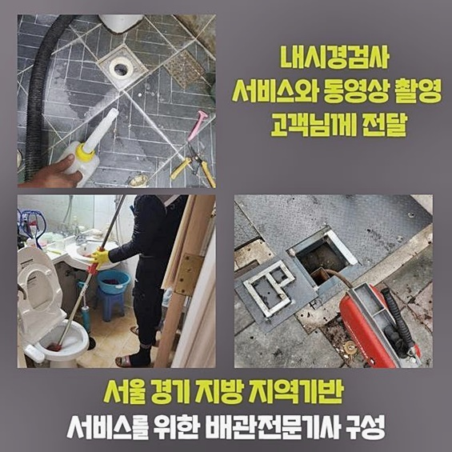

🏠 금천구 가산동대변기역류 시흥동 하수구청소 설비공사
용인시 처인구 배관막힘 전문 시공 후기

📋 작업 개요
- 위치: 용인시 처인구, 수원시 영통구, 화성시 동탄
- 서비스 유형: 배관막힘, 하수구청소
- 작업 일시:
- 업체명: 하수구수사대 (010-5615-2118)
🔍 문제 상황
금천구 가산동대변기역류 시흥동 하수구청소 설비공사
일상을 영위하면서 하수구를 오래 쓰면 쓸수록 각양각색의 이유들이 모이다가 결국 막혀버리는 사고가 한번쯤은 도래하기 마련입니다
식당이나 가정집 등 여러 타입의 건물들에서 하수구가 마비되는 난감한 상황은 빈번하게 촉발되는 일이죠
하수구의 정상화를 위해서 전문가를 물색 중이시라면 필수적 장비라인업이 마련되어 근본적인 문제점을 발굴해 내고 하자 없는 시공력을 보이는 곳을 고르는 안목이 필요합니다
오늘 찾아간 방문지는 수많은 방문객들이 함께 사용하는 상업시설 내 화장실이었고 물이 제대로 빠지지 못한다며 빠른 출동이 가능하냐 물어보셨어요
입점한 점포직원분과 방문객들이 같이 활용하는 곳의 특성상 보편적인 집들에 비해서는 고장나는 일 자체가 더 우월하게 많다고 할 수 있어요
오늘 현장을 담당하신 고객님은 이정도로 막혀서 역행이 빚어지는 것은 처음 보는 일이라면서 어찌할 바를 몰라 힘들었다 하셨어요
특히나 여러 방문객들이 각자 다용도로 사용하는 공용 설비기에 스피드있는 처리에 바로 돌입해야 한다고 판별되어서 곧장 잘못된 점들을 손보기 시작했네요
단순한 막힘으로 추정되는 상담을 통해서 찾아가 보면 막힘을 촉발하는 대상들은 스펙트럼이 넓게 나와서 구체적인 조사에 들어가여 특정한 포인틀를 짚어주는 단계를 기반으로 삼아야 합니다
출장을 간 이후에는 관측할 수 있는 환경을 구축하고 문제가 된 동기를 비롯하여 얼마나 진행되었는지를 살펴보기 시작했네요
여러 하수구를 뚫다보면 내부 점검만 거치고도 전과정을 수행할 수 있는 장소가 외부에서의 시야까지 신중히 검토한 후 착수해야지 결론이 나는 때도 있어요

🔎 원인 분석
💡 전문가 진단: 정밀 진단 장비를 사용하여 슬러지의 고착 여부를 판명하고 타격/세척 작업을 실시했습니다.
본 현장도 상황이 중증 이상이라 외부의 하수관에 이르기까지 장애요인이 자리했기에 완성도를 높이려는 전개가 원만하지는 않았네요
어마어마한 악취가 입구 쪽까지 확산되어버린 상황이었고 거기다 범람 현상까지 오염되어 있었기에 원인 조사에 근본을 두고 출발해야겠다 싶었죠
지속적으로 냄새가 꼬릿하게 가장 심한 지대부터 관측해 줬는데 역시 더러운 오염물질과 찌꺼기들로 인하여 물이 이동하기 불가할 정도라 싶었네요
배관이 한 줄기 같아보여도 바깥쪽의 설비로 붙어져 있는 형태라면 일부 배출구만 막혀도 범람이나 중증 막힘이 형성되기도 합니다
검토에 들어간 한 구멍만 확인해 보더라도 상태가 단순하지만은 않다는 점을 알아차릴 수 있었어요
내부에 흙먼지들도 어마어마한 양이 발견됐고 여러 찌꺼기들이 뭉쳐있는 바람에 진단 장비를 배치하는 일도 힘들만큼 통로가 협소했어요
빠른 진행을 위해서 겉부분에 끼인 물질을 제거하고 장치가 진입할 수 있는 숨구멍을 내놓고 들여보내서 디테일하게 탐색을 해주었습니다
급작스러운 고장으로 인해 어찌할 바를 모르던 고객님은 급한 마음에 전문적 지식기반 없이 뚫음을 도전하시기도 하는데요
혼자 간단히 처리할 수 있는 뚫어주는 활동만으로는 퀄리티 높은 배관청소는 성사되기가 힘들어요
내부에 축적된 침전물들은 시간이 흘러가면 엉겨붙은 채로 배관에 고정이 되기 때문에 떼내는 과정에서 엄청난 데미지를 형성할 지도 모릅니다
무리하게 힘쓰다가는 이물질 속성을 바꿔 더욱 나쁘게 전락시킬 수 있으므로 필히 능수능란한 기술력을 갖춘 전문가에게 요청을 해서 해결을 보셔야 하는데요
진공의 힘으로 빨아당기는 석션기는 힘이 매우 실제로 상당하고 범용성이라 빈틈 없이 채워져 있는 노폐물까지 시원스럽게 척결할 수 있습니다

🔧 작업 과정
배수구 위에 자리한 그레이팅을 다 들어내고 석션을 싹 돌려보니 한 통에 가득 찰 정도로 여러 형상의 물질들이 밖으로 밀려나온 결과물을 보게 됐네요
다음으로는 바깥 쪽과 연계된 수로도 마찬가지로 촬영을 이어가 봤더니 흘러가는 경로 가운데가 이미 침범되어 버린 것을 생생하게 목격하게 됐네요
물길의 직경이 그다지 크지 않은데다가 장기간 누적된 잔량들이 강하게 고정되어 정상 배출로를 더욱 비좁게 만들었더라고요
장기간 자리했던 오염물질들이 차곡차곡 적립이 되면서 통수가 마비되면서 내용물이 겉으로 범람하는 일까지 야기되었다고 추론됐네요
여기도 물길을 내야 했기에 어렵사리 석션 노즐을 넣어서 작동을 시켜 보았는데 아까보다 곱절은 더 많이 비위생적인 잡물들이 호스로 빨려 들어가서 타닥거리며 뽑혀 올라왔습니다
다양한 장소들에 찾아가 보면 파이프 벽을 따라 오물이 접착된 곳 역시도 자주 접할 수 있습니다
오래된 찌꺼기일수록 인터넷에서 찾아낸 누구나 할 수 있다는 청소절차를 통과하는 것만으로는 좋은 결과를 얻기 어렵죠
마치 정상화가 된 것처럼 느껴지다가도 이내 쳇바퀴같이 되풀이되니 해소될 때 까지 아까운 시간이 허비되는 결과를 부르겠죠
보통은 외부 정화시설까지도 일제히 마비될 때가 많아서 증세가 있는 곳을 다 목표로 삼고 작업에 착수하는 게 필요해요
이물질의 크기나 속성과 효율적인 시공 플랜을 설립해서 장애 요인을 제거하는 프로세스에 몰두했습니다
많은 곳이 오염됐다면 내부에서 생기는 썩은 내도 농후해 질 것이므로 대수롭지 않게 여기시지 말고 하루라도 빠르게 딥 클리닝을 해줘야 합니다
파이프의 안쪽 표면까지 오염원이 끈적하게 들러붙어 흔들림 없이 유지됐기에 고압수 발포를 통해서 정돈하려고 결심했어요
녹여줄 수 있을 정도의 물을 부착된 오물을 기점으로 쏴서 보편적으로 들어가는 장치만으로는 드라마틱하게 개선되지 않은 장애 요인들을 한 방에 닦아내 주는 것을 해당 업무가 담당합니다
외부에 자리한 집수정이나 다량의 물이 빠지는 메인 관로는 막힘이 쉽게 극복되기 힘든데 이럴 때 고압수를 활용한 장비들을 사용하면 효율이 높아요
고정력이 상당한 영역이라면 압력을 증대시켜서 이를 하나씩 소거시켜 나가는 식으로 업무에만 오로지 집중해 보니 찌꺼기가 탈락되는 걸 최종적으로 확정할 수 있었어요!
고압수를 이용해 내부를 정화해 나갔더니 배수로가 굉장히 청결해 져서 비로소 해방감을 느낄 수 있었네요
고압수 한번의 사용만으로도 기타 도구들을 같이 쓰는 것보다 하수구에 자리한 고질적인 문제들을 수월하게 해결할 수 있어 만에 하나를 대비해 가져다닙니다
실내뿐 아니라 야외까지도 작업을 끝마치게 된다면 화장실로 들어가서 통수가 원활한지 마감 테스트에 돌입합니다
통로를 가로막아서던 물질을 정비했더니 근처에서 스믈스믈 올라오던 냄새도 킁킁대도 느껴지지 않게 되자 고객님도 엄지를 치켜들어 주셨습니다


✅ 작업 완료
하수관과 집수정의 이상 징후는 멀쩡하게 운영되다가도 뜬금 없이 빚어질 수 있는 사고이니 스스로 고치기보다는 전문 업체를 찾으시는 편이 좋습니다
축적해온 노하우들을 기반으로 보수 후에도 뒷수습도 신경써주는 업체로 고르셔야 해요
평범한 막힘 증세를 호소하는 사건이라도 빌딩 자체의 노후화 정도도 다르며 다루어야 할 시설물의 사이즈도 상이하기 때문에 많은 요소를 따져본 후 작업 요강을 정하게 됩니다
문제의 원인을 잘 찾고 누락분 없이 수습해주는 전문진을 찾으셔야만 하자 없는 결과물을 확보하실 수 있을 겁니다
늦은 시간대라고 하더라도 고객님의 마음을 충분히 헤아려 드리면서 어려운 점들을 도와드리겠습니다



⚠️ 하수구 배관 막힘 예방 및 관리 가이드
- ✅ 머리카락, 비닐, 물티슈 등 물에 분해되지 않는 이물질은 절대 흘려보내지 마세요.
- ✅ 기름기 많은 식기는 설거지 전 키친타올로 먼저 기름때를 닦아내세요.
- ✅ 주기적으로 배수구에 뜨거운 물을 가득 부어주어 유지방 고착을 방지하세요.
- ✅ 작업 후 1년 이내 재발 시 무상 A/S 보증 서비스를 제공합니다.
💡 핵심 정리
- 확실한 장비 작업(내시경 점검 및 샤프트 스케일링)으로 원인을 뿌리 뽑습니다.
- 작업 후 1년 이내에 동일한 부위 재발 시 100% 무상 A/S 서비스를 보장합니다.
- 서울 · 경기 · 인천 전 지역에 24시간 언제든 긴급 출동할 수 있도록 항시 대기 중입니다.
❓ 자주 묻는 질문 (FAQ)
🚨 용인시 처인구 배관막힘 문제로 고민이신가요?
정확한 원인 진단과 확실한 시공으로 재발 없는 해결을 약속드립니다.
24시간 긴급 출동 | 서울 · 경기 · 인천 전지역 | 1년 내 재발 시 무상 A/S